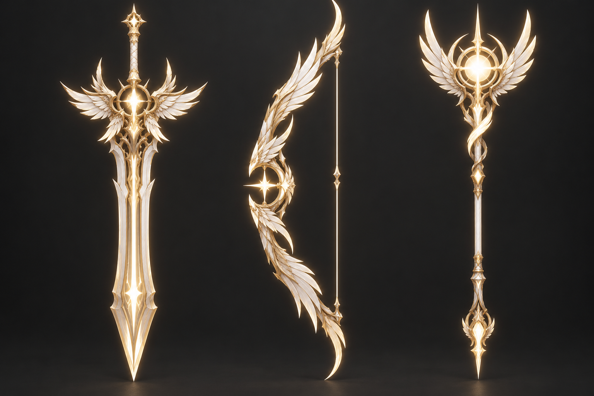

천상의 날개 무기 3D 미리보기
고른 3번 컨셉을 무기별 단독 그림으로 다시 뽑아, 트와일라잇 무기와 같은 방식(실루엣 두께 + 둥근 모서리 + 앞뒤 그림 투영, 손잡이·활시위는 원통)으로 만든 3D 모델입니다. 길이는 지금 트와일라잇 양손검·롱보우·스태프와 같습니다. 게임 파일 버튼은 실제로 게임에 들어가는 MOD·텍스처를 다시 읽어 보여줍니다. 공격 이펙트 · 컨셉 그림 · 기존 무기 금색 시안
천상의 날개 양손검celestial-sword
천상의 날개 롱보우celestial-longbow
천상의 날개 스태프celestial-staff
